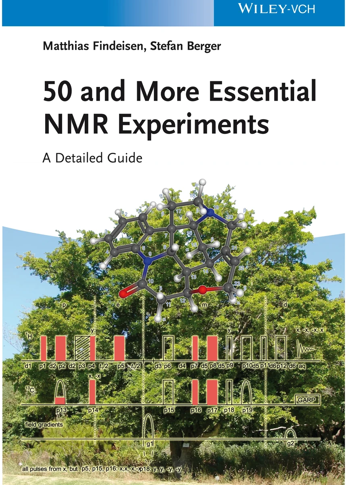

LOCAL BILINGUAL NMR EDITION
50 and More Essential NMR Experiments
按章节与实验浏览英文原文、中文对照和原书页面；支持逐页全文检索。

BROWSE BY CHAPTER
按章节与实验浏览
展开章节可查看实验、附录及对应的印刷页码。
第 F 章Front Matter前置页1 个主题 · 原书 cover–x
第 1 章The Organic Set of NMR Spectra有机化合物 NMR 谱图组合6 个主题 · 原书 1–34
第 2 章Advanced Organic NMR Spectroscopy高级有机 NMR 波谱学9 个主题 · 原书 35–74
第 3 章Selective Methods选择性方法9 个主题 · 原书 75–112
概述Selective Methods原书 75–76
3.1Water suppression by Presaturation原书 77–80
3.2Solvent Suppression by 1D-NOESY原书 81–84
3.3Water Suppression by SOGGY Excitation Sculpting原书 85–88
3.4Solvent Suppression using WET原书 89–92
3.5SELTOCSY原书 93–96
3.6SELNOESY原书 97–100
3.7SELINCOR原书 101–104
3.8SELINQUATE原书 105–108
3.9Band Selective HMBC原书 109–112
第 4 章Heteronuclear NMR异核 NMR7 个主题 · 原书 113–148
第 5 章Experiments in Physical Organic Chemistry物理有机化学实验5 个主题 · 原书 149–172
概述Experiments in Physical Organic Chemistry原书 149–150
5.1Measurement of the Spin–Lattice Relaxation Time T1原书 151–154
5.2Measurement of the Spin–Spin Relaxation Time T2原书 155–158
5.3Dynamic 1H NMR Spectroscopy原书 159–162
5.4Diffusion Measurement with DOSY原书 163–166
5.5Residual Dipolar Couplings (RDC)原书 167–172
第 6 章Organic Chemistry Applications有机化学应用7 个主题 · 原书 173–208
第 7 章An Excursion to the Solid State and to Structural Biology固态 NMR 与结构生物学专题4 个主题 · 原书 209–232
第 8 章Maintenance and Calibration维护与校准6 个主题 · 原书 233–272
概述Maintenance and Calibration原书 233–234
8.1Calibration of Pulse Duration in the Transmitter Channel原书 235–240
8.2Calibration of the Pulse Duration in the Indirect Channel原书 241–246
8.3Shaped Pulses原书 247–252
8.4Adiabatic Pulses原书 253–256
8.5Temperature Calibration in NMR原书 257–264
8.6Calibration of Pulsed Field Gradients原书 265–272